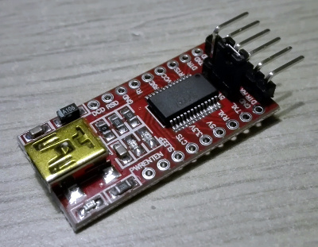
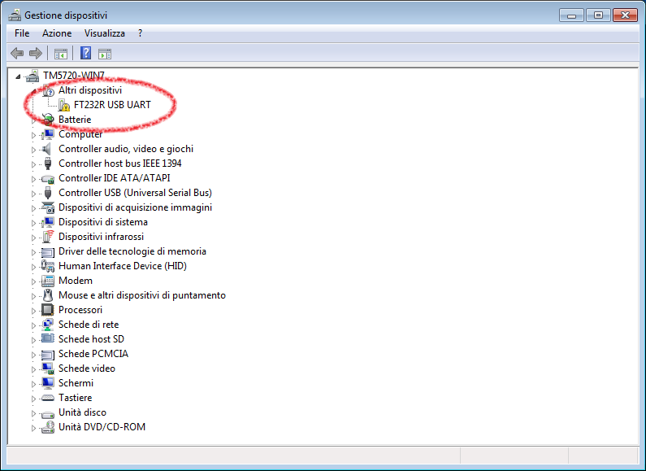
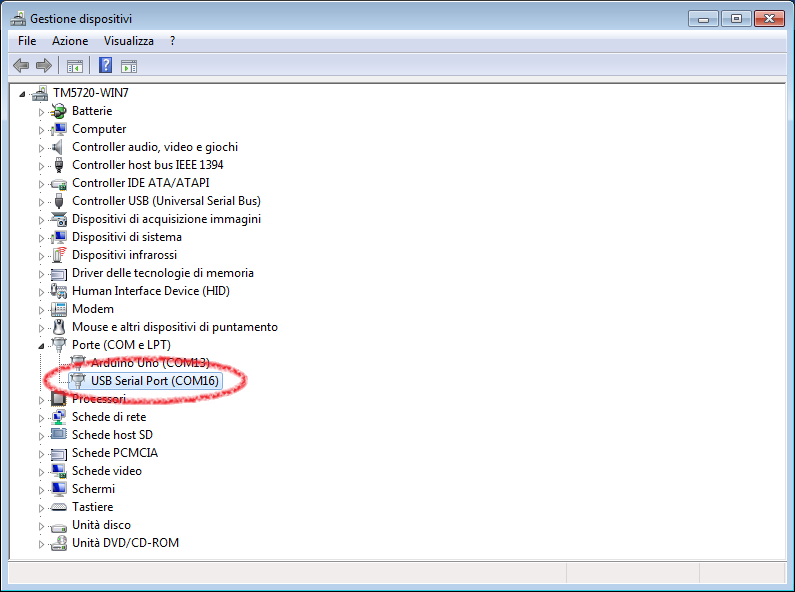
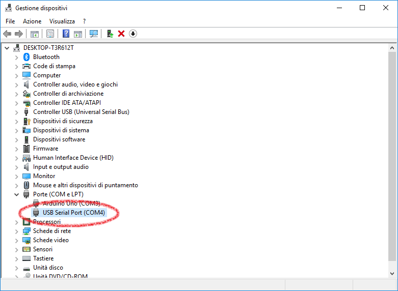
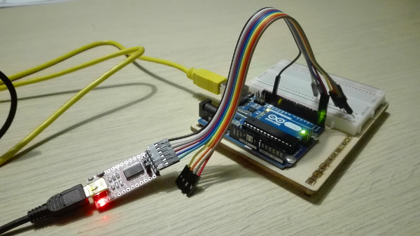
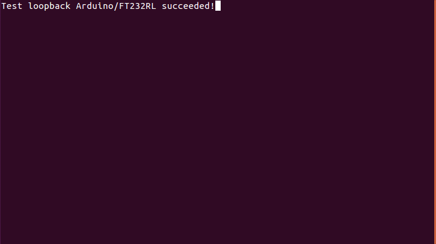
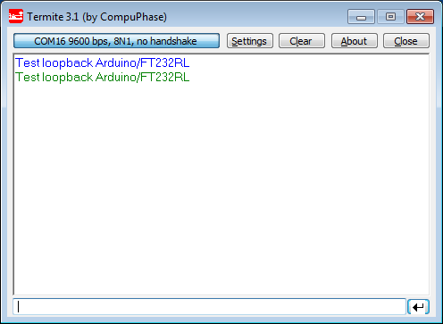
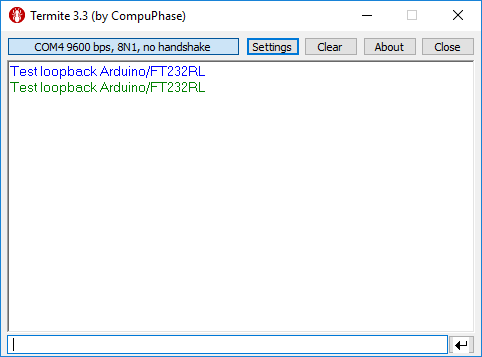

risorse | test del chip ft232rl con arduino
Attenzione: ho posto la massima cura ed attenzione nel redigere questi appunti; declino tuttavia ogni responsabilità per eventuali imprecisioni, errori od omissioni, così come declino ogni responsabilità per eventuali danni a cose, proprietà o persone derivanti dall’uso di questi contenuti.
Il chip in oggetto, prodotto dalla Future Technology Devices International – FTDI, è un convertitore Seriale TTL/USB che potrebbe tornarmi utile in un progetto di più ampio respiro. Ho quindi acquistato una scheda che lo contiene, per verificarne le caratteristiche:
La scheda ricevuta, una AZDelivery FT232RL
La scheda supporta due livelli di tensione sull'interfaccia seriale, 3.3V e 5V. Prima di utilizzarla è necessario selezionare il livello desiderato inserendo il ponticello in dotazione nella posizione opportuna. Dovendola collegare ad un Arduino UNO, la scelta è ricaduta sui 5V.
Non è stato necessario installare alcun software aggiuntivo: Ubuntu ha riconosciuto la scheda e l'ha montata automaticamente sulla porta ttyUSB0. Il sistema operativo non ha mostrato nessuna notifica quando ho collegato la scheda ad una delle porte USB, ma il contenuto del buffer del kernel conferma l'avvenuto riconoscimento:
$ dmesg | tail ... [21773.304538] usb 6-1: Manufacturer: FTDI [21773.304544] usb 6-1: SerialNumber: A50285BI [21774.367119] usbcore: registered new interface driver usbserial [21774.367153] usbcore: registered new interface driver usbserial_generic [21774.367180] usbserial: USB Serial support registered for generic [21774.374653] usbcore: registered new interface driver ftdi_sio [21774.374735] usbserial: USB Serial support registered for FTDI USB Serial Device [21774.374858] ftdi_sio 6-1:1.0: FTDI USB Serial Device converter detected [21774.375486] usb 6-1: Detected FT232RL [21774.378159] usb 6-1: FTDI USB Serial Device converter now attached to ttyUSB0
Ubuntu ha riconosciuto e montato automaticamente la scheda FT232RL
Windows non è stato in grado di riconoscere la scheda. Una volta collegata infatti, è comparso il seguente messaggio d'errore:
Windows 7 non ha riconosciuto la scheda FT232RL
La finestra di Gestione dispositivi conferma il mancato riconoscimento:
La situazione vista da Gestione dispositivi
I driver e le istruzioni di installazione sono scaricabili dalla pagina ufficiale Fare attenzione a scaricare i driver corretti, perché ce ne sono di due tipi: i D2XX Direct drivers consentono di accedere alla scheda via DLL, i VCP attraverso una porta seriale virtuale: sono questi quelli giusti. Per sicurezza ho fatto una copia locale sia del driver che delle istruzioni di installazione.
Una volta completata l'installazione dei driver, il sistema ha una porta seriale aggiuntiva denominata USB Serial Port, in questo caso identificata come COM16 (l'indice numerico potrebbe cambiare):
COM16 è la porta seriale associata alla scheda FT232RL da Windows 7
Il procedimento da seguire è stato analogo a quello applicato per Windows 7, dato che anche in questo caso la scheda non è stata riconosciuta. Dopo aver installato il driver VCP per Windows 10 64 bit dalla pagina ufficiale (qui le copie locali del driver e delle istruzioni), la scheda è accessibile attraverso una porta seriale virtuale denominata USB Serial Port, in questo caso identificata come COM4:
COM4 è la porta seriale associata alla scheda FT232RL da Windows 10
Per verificare il funzionamento della scheda ho deciso di implementare un servizio di echo seriale su Arduino. Collegando Arduino al PC tramite la scheda in esame, userò un terminale per inviargli alcuni caratteri; se tutto funziona a dovere, gli stessi caratteri appariranno nel terminale. Il codice sorgente del servizio di echo è banale:
void setup() {
Serial.begin(9600);
}
void loop() {
while (Serial.available())
Serial.write(Serial.read());
}
Lo sketch del servizio di echo seriale
Il collegamento tra Arduino e il convertitore Seriale/USB avviene per mezzo di tre connettori: la linea di massa (GND) e le due di trasmissione, RX e TX, che ovviamente vanno incrociate:
| Segnale | Pin Arduino | Pin FT232RL | Colore cavo |
|---|---|---|---|
| GND | GND | GND | nero |
| TX | 1 | RX | blu |
| RX | 0 | TX | viola |
Lo schema elettrico della connessione
La scheda FT232RL si collega infine al PC con un cavo USB con attacco USB-mini.
Il circuito di prova completo
Per verificare il corretto funzionamento del circuito, avvio un terminale, lo collego a /dev/ttyUSB0, digito alcuni caratteri e mi accerto che questi appaiano sullo schermo:
$ screen /dev/ttyUSB0 9600
L'apparizione dei caratteri digitati conferma il funzionamento della scheda
Windows non dispone di un terminale, per cui ne scarico uno minimale, ma particolarmente efficace (termite, di cui conservo una copia locale); lanciato, lo collego alla porta seriale virtuale associata alla scheda, invio alcuni caratteri alla porta e verifico che questi vengano rispediti indietro dal servizio di echo che sta girando su Arduino:
L'effetto dell'echo su Windows 7
L'effetto dell'echo su Windows 10
L'esperimento ha dunque avuto successo su tutte e tre le piattaforme utilizzate!
Pagina modificata il 18/12/2017